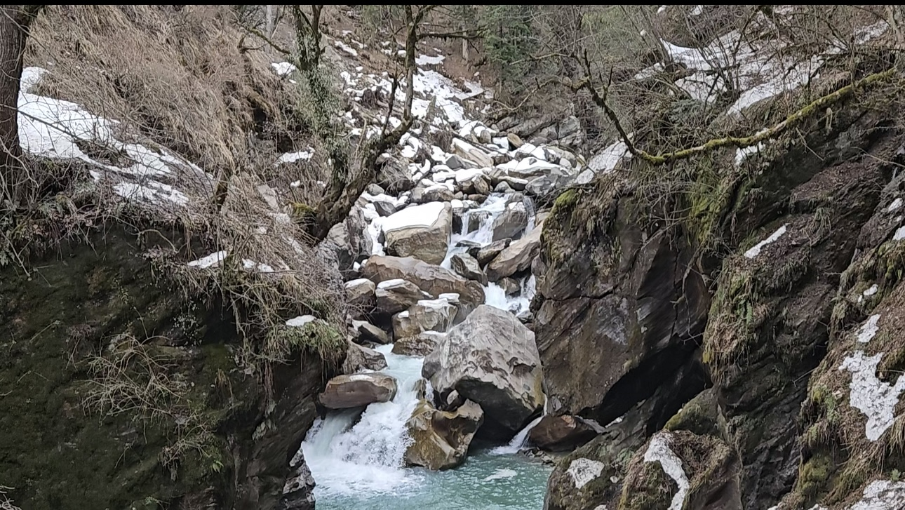
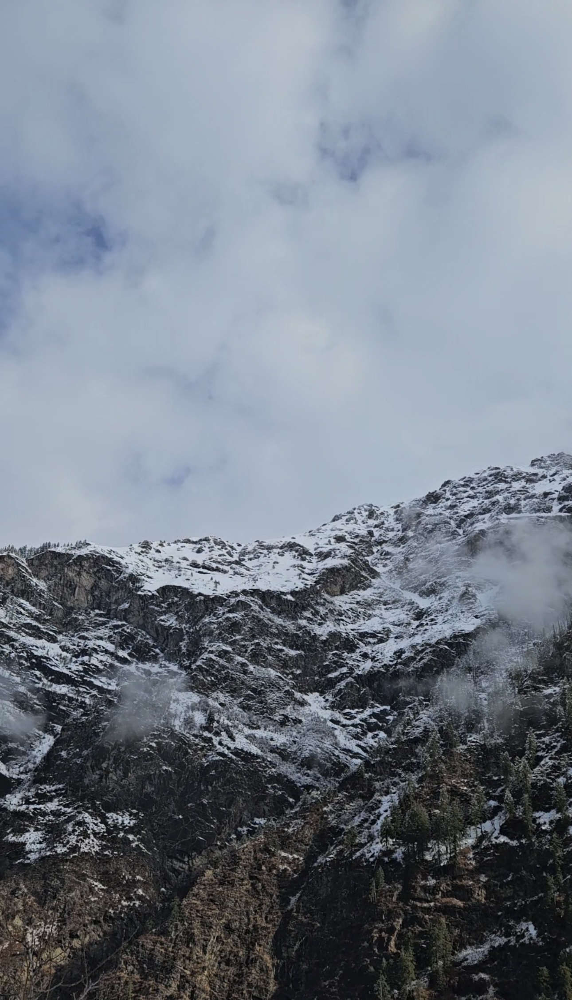

Kheerganga, HP (India)
Kheerganga is a beautiful trekking spot in Himachal Pradesh, India, located in the Parvati Valley at about 2,960 meters above sea level. It's famous for its stunning views, lush greenery, and natural hot water springs. The trek to Kheerganga is around 12 km from Barshaini and takes you through forests, waterfalls, and scenic mountain trails. Once at the top, you can relax in the hot springs while enjoying breathtaking views of the Himalayas, making it a perfect getaway for adventure lovers and nature enthusiasts.
Learn More About KheergangaTakakkaw Falls, BC (Canada)

Takakkaw Falls is one of the most beautiful and tallest waterfalls in Canada, located in Yoho National Park, British Columbia. Standing at an impressive height of 373 meters, the waterfall is fed by the Daly Glacier, which keeps the water flowing strongly, especially in the summer months. The falls are easy to reach with a short walk from the parking area, making them accessible for all visitors. Surrounded by towering cliffs, lush forests, and the scenic beauty of the Canadian Rockies, it’s a great spot for photography, hiking, or simply enjoying nature. Whether you're an adventure lover or just looking for a peaceful getaway, Takakkaw Falls is a must-visit destination!
Learn More About Takakkaw FallsTosh, HP (India)
Tosh is a peaceful village in Himachal Pradesh, India, located in the beautiful Parvati Valley. It’s a popular spot for backpackers and nature lovers because of its stunning views of snow-capped mountains, forests, and rivers. The village is also great for trekking, with trails that lead to other amazing scenic spots in the valley. The calm vibe of Tosh makes it the perfect place to relax and enjoy nature, away from the hustle and bustle of city life. You can also explore the local culture, try some tasty food, and experience the village's traditional way of life. Whether you want to adventure or just chill, Tosh has it all!
Learn More About Tosh